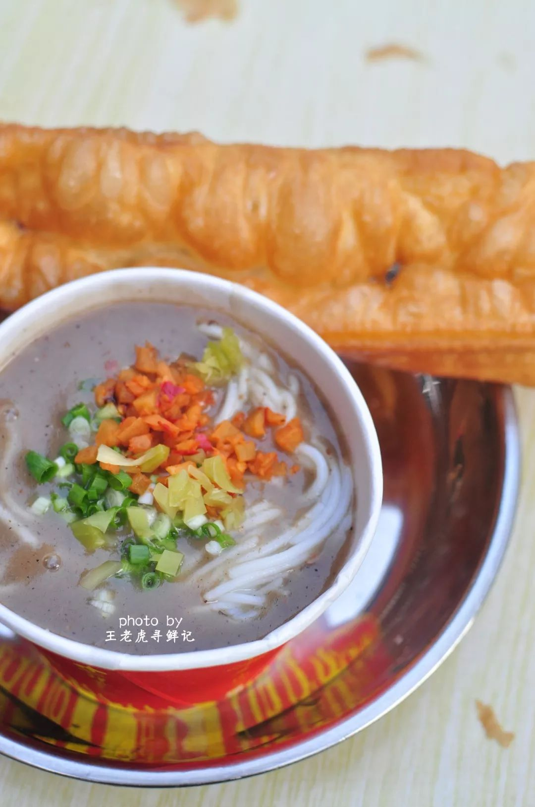
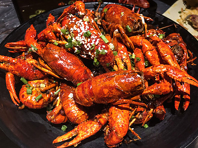

过早：武汉人的早餐仪式感
烟火气 街头美味 百年传承
热干面：江城灵魂
碱水面需用沸水烫至七成熟，沥干后淋上现磨芝麻酱（必须加少量香油调稀，否则结块），撒上萝卜丁、酸豆角、葱花、蒜末，最后滴几滴香醋提味。搅拌时芝麻香扑鼻，面条筋道爽滑，咸香中带着微酸，是武汉人刻在骨子里的味觉记忆。

三鲜豆皮：过早界的“硬菜”
绿豆与大米按比例磨浆，在平底锅摊成薄如蝉翼的豆皮，铺上提前蒸好的糯米，再码上肉丁、香菇丁、笋丁，淋上生抽调味，煎至两面金黄酥脆。外酥内软，糯米吸满肉香，一口下去层次丰富，是武汉过早的“精致代表”。

油条+鱼糊粉：经典搭配
油条炸得金黄焦脆，咬开蓬松带香；鱼糊粉用鲜鱼汤熬煮，米粉裹满稠白浓汤，撒上胡椒、葱花鲜辣开胃。吃时把油条掰段泡进糊汤，软韧吸满鲜汁，是武汉过早暖身管饱的经典组合。
夜宵：长江边的烟火江湖
深夜食堂 辣爽过瘾 江湖风味

油焖大虾：夏夜标配
武汉小龙虾以“油焖”为经典做法，选用鲜活的清水虾，剪去虾头、开背去线，用生姜、大蒜、干辣椒、花椒、豆瓣酱爆炒，加啤酒焖煮20分钟，让虾肉吸满浓郁酱汁。肉质Q弹紧实，辣中带麻、咸香回甘，配上冰镇啤酒，是夏夜江边的惬意时光。

街头烧烤：汉味烟火
武汉烧烤讲究“重油重酱”，五花肉、鸡翅、脆骨、土豆、藕片都是必点。烤串刷上秘制甜面酱，撒上孜然、辣椒面，烤至外皮焦香、内里多汁。尤其是烤藕片，脆嫩爽口，带着酱香，是武汉人夜宵的“隐藏王牌”。